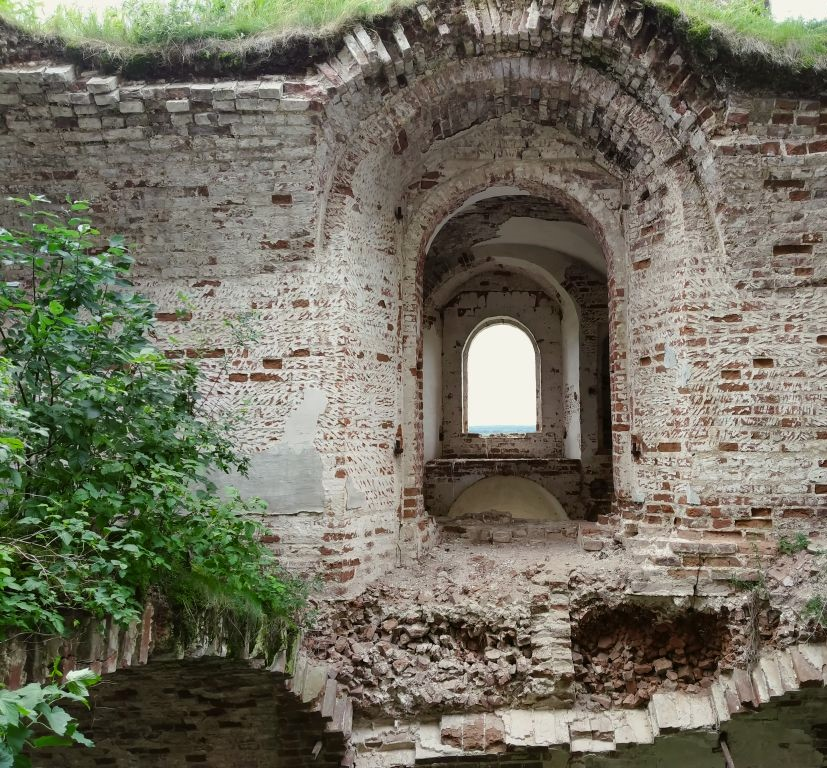

ЗАБРОШЕННЫЕ ХРАМЫ ПРИВОДИНА И ЕГО ОКРЕСТНОСТЕЙ
Тему работы я выбрала не случайно. Дело в
том, что в 2005 году впервые отмечался День
народного единства. Более того, этот
праздник совпал с ещё одним знаменательным
днём - праздником иконы Казанской Божьей
Матери.


Что же это за праздник -
День
народного единства?
Прежде всего, это единение людей независимо
от возраста, национальности, происхождения,
материального благосостояния
и вероисповедания. Именно в том далёком XVII веке и произошло такое единение народа. Все люди объединились в борьбе против польской интервенции. И именно вера в Бога помогла людям,
дала им надежду на победу:
и вероисповедания. Именно в том далёком XVII веке и произошло такое единение народа. Все люди объединились в борьбе против польской интервенции. И именно вера в Бога помогла людям,
дала им надежду на победу:
«Духовенство старалось всеми средствами
благочестия ободрять народ. В разных городах
в знак покаяния,
для умилостивления Божия гнева налагались особые строгие посты, совершались молебны о спасении отечества, ходили утешительные вести о разных видениях и откровениях
с целью поддержать падающий дух народа»
для умилостивления Божия гнева налагались особые строгие посты, совершались молебны о спасении отечества, ходили утешительные вести о разных видениях и откровениях
с целью поддержать падающий дух народа»
Именно на Бога надеялись люди, именно к нему
обращались в своих молитвах. Приведу такие
факты из истории.
Духовное наследие: Церковь как
опора в
трудные времена истории
Готовясь к битве с поляками, князь Пожарский
ездил в Спасский суздальский монастырь
молиться Богу и поклониться гробам своих
предков». После освобождения Москвы от
интервентов на Красную площадь торжественно
внесли икону Казанской Божьей Матери и дали
обет построить там церковь, которая была
построена и существует до сих пор.
Не только в то время, но и всегда церковь
помогала людям. Бытует мнение, что церковь
только угнетала людей, обирала их, забирала
у крестьян земли, однако я хочу в какой-то
мере опровергнуть это мнение. Да,
безусловно, у церкви было много земель, было
хорошее хозяйство. Но в то же время церковь
обогащала духовный мир людей, помогала
справиться с душевными переживаниями. Она
давала надежду на лучшую жизнь, именно при
церквях открывались первые школы,
библиотеки.
Сейчас Россия переживает трудные времена: низкий
уровень жизни большинства людей, безработица,
рост преступности, высокая смертность, низкий
уровень рождаемости, разобщение людей,
отсутствие у них общих интересов, рост
безнравственности, безверие. Возрождение России
возможно лишь с духовным возрождением людей.
Вера в Бога объединяет, сплачивает людей,
формирует их нравственные качества. Это понимали
наши далёкие предки. Церковь была обязательна в
каждом селе. Её строили всем селом, всем миром.
Не было исключением и Приводино. В начале XX
века в Приводине и его окрестностях были
следующие церкви:

Николаевская церковь
Ярокурская Спасо-Преображенская церковь
Николаево-Прилуцкий мужской монастырь
Именно о них в дальнейшем и пойдет речь.